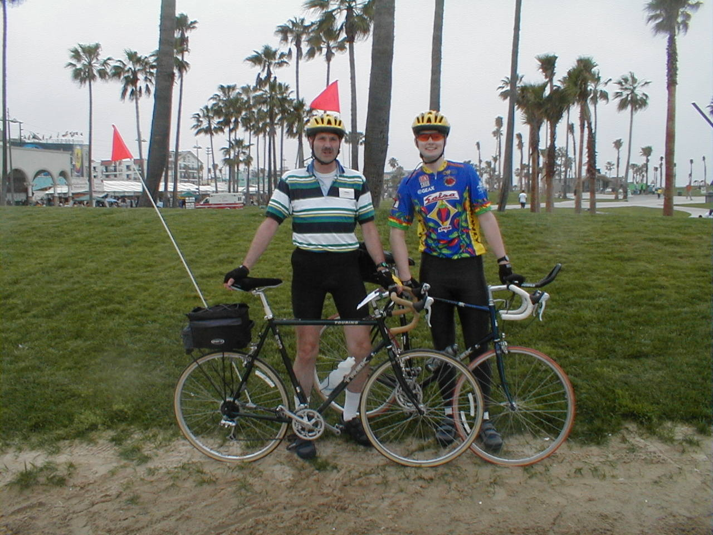

Day 0: May 12, Los Angeles, CAHome - Next Day Photo of the DayDad and me along the Los Angeles beach bike trail near Venice Beach. Keegan's LogDay 0: May 12, Los Angeles, CA Mileage: 26Weather: 60-65 degrees, Overcast and drizzling Vertical Climb: N/A We finally arrived at the hotel in El Segundo, California at 11:30 last night, after some major traveling delays and a hotel shuttle bus fiasco. Jet lag woke dad up at 4 AM, we walked down to the Starbucks around the corner for some breakfast when I had finally rubbed the sleep from my eyes. Lo and behold, our bikes were already assembled and inspected, only the day-glow orange flags needed to be added. We got together with a few other riders and took a short ride to the beach to work ourselves and the bikes in a bit. We rode down the bike path to Venice Beach and then on to Santa Monica for lunch at Taco Bell. There weren't very many people out on the paths and the beaches were empty, mostly because of the 60ish degree temperatures and the drizzling skies. It's amazingly cold here, I only packed shorts so I was shivering all day, I had expected southern California to be a lot warmer! The desert comes soon enough though. Afterward we met the staff and some of the other riders. Tracy, the leader, is a very enthusiastic person, the whole staff seems psyched. The riders tended to be on the graying side, I am the youngest on the ride and dad is well toward the young end of the median. The riders seem very excited too, you can sense that a lot of people are beginning on a trip they've been dreaming about for decades. I also had to get a new cyclometer, the cable on my old one snapped while the bike was in transit. This was our first chance to see the trip mechanic in action, he sold me a new cyclometer and installed it for me, so now my bike is ready to go. After a big buffet dinner and cake, so were we. Tomorrow it's off to Riverside... I'm working on a website which will have a ride log and a few pictures from the ride, it should be up tomorrow night. Keep in touch... Phil's LogTrying to get here, we had to wonder if flying was really a luxury. Our first plane was stuck on the ground in Chicago with bad brakes, missed our connection in Las Vegas, then on finally getting to LA the hotel bus never came. Sleep came late. Work 4 AM, still on Indiana time, and went for an early walk with a fellow rider from New Jersey. California doesn't start early, not the lifestyle here! Finally sticky-breakfasted with Keegan at a local Starbucks, then back to fetch our bicycles. The crossroads mechanics had already reassembled them after shipping, nice of them!, and we did the final outfitting with rack trunks and cycle computers. Sadly, Keegan's computer wiring was broken - problem #1. I thought I had packed a spare, but sure cannot find it! Crossroads had one in stock, and it was soon replced. This crew is prepred!. Five of us went for a beach front ride from here, near LAX, to Santa Monica for lunch on the pier. I stopped by the apartment of an old friend (for my PCHS friends, Judy Avery) but no one home. The ride back was with the wind. Our first route rap was preceded by Tracy introducing the team of six. All have upbeat, can-do-it attitudes. The riders each introduced themselves. Keegan is the youngest by a generation, and I'm younger than the average! This is not the same crowd as found at the average Central Indiana Bicycling Association 50 mile rid. The participants are less fit looking, but more mature in attitude, with a deeper sense of purpose. It will be fun to get to know each. Tomorrow morning we ride to Manhattan Beach, dip our rear wheels in the Pacific, then head east. Boston. Everyone is anxious. And everyone hopes that we will soon see sunnier, warmer weather. It is cold here! My quote from our self-introdutions was from Matthew 17:20. "If you have faith as small as a mustard seed... nothing will be impossible". |
{kind=link}